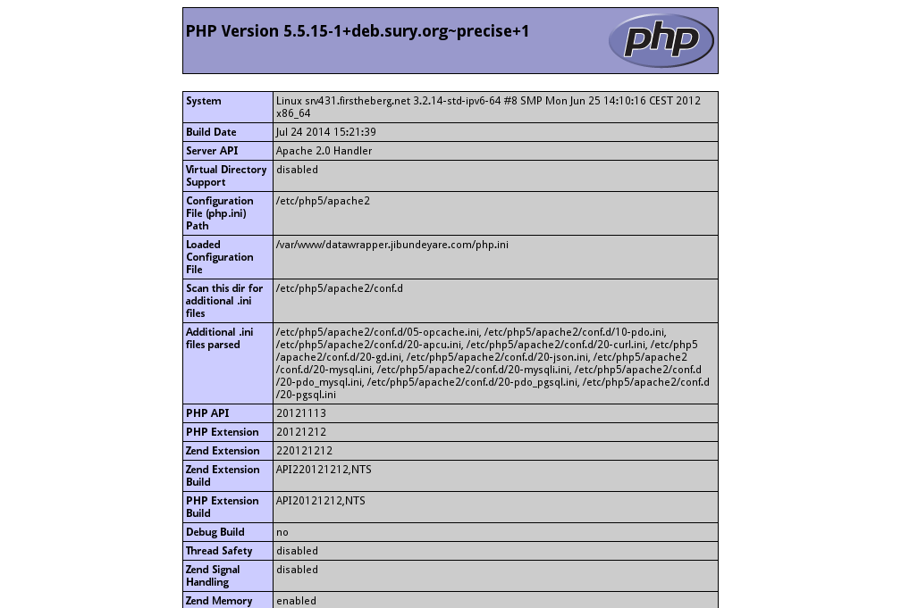

Développement web côté serveur avec PHP
la suite apache mysql php / lamp / wamp / mamp
LAMP (software bundle) - Wikipedia, the free encyclopedia
windows
avec uwamp
Rendez vous sur le site de UwAmp Wamp Server et suivez les instructions d’installation.
Si ce n’est pas déjà fait, lancez le serveur apache et essayez l’adresse http://127.0.0.1/ dans votre navigateur.
Copiez le fichier code/phpinfo.php dans votre dossier web et essayez l’adresse http://127.0.0.1/phpinfo.php
Le dossier web se trouve dans UwAmp\www. Et le dossier UwAmp se trouve là où vous l’avez installé (Desktop, C:\, …).
avec wampserver
Rendez vous sur le site de WampServer et suivez les instructions d’installation.
Si ce n’est pas déjà fait, lancez le serveur apache et essayez l’adresse http://127.0.0.1/ dans votre navigateur.
Copiez le fichier code/phpinfo.php dans votre dossier web et essayez l’adresse http://127.0.0.1/phpinfo.php
Le dossier web se trouve dans C:\wamp\www.
mac os x
Rendez vous sur le site de MAMP et suivez les instructions d’installation.
Voir la documentation en ligne de MAMP et la FAQ pour de plus d’informations.
Si ce n’est pas déjà fait, lancez le serveur apache et essayez l’adresse http://127.0.0.1:8888/ dans votre navigateur.
Copiez le fichier code/phpinfo.php dans votre dossier web et essayez l’adresse http://127.0.0.1:8888/phpinfo.php
Le dossier web se trouve dans /Applications/MAMP/htdocs.
linux
Avec une distrib debian / ubuntu, installez la suite logicielle avec les commandes suivantes :
sudo apt-get update
sudo apt-get install apache2 apache2-doc
sudo apt-get install mysql-server mysql-client
sudo /usr/bin/mysqladmin -u root password 'votre-mot-de-passe'
sudo apt-get install php5 php5-mysql
sudo apt-get install phpmyadmin
sudo /etc/init.d/apache2 restart
Prenez soin de remplacer votre-mot-de-passe par votre vrai mot de passe.
Voir la page LAMP du wiki Debian pour plus d’infos.
Si ce n’est pas déjà fait, lancez le serveur apache et essayez l’adresse http://127.0.0.1/ dans votre navigateur.
Copiez le fichier code/phpinfo.php dans votre dossier web et essayez l’adresse http://127.0.0.1/phpinfo.php
Le dossier web se trouve dans /var/www.
vérification de l’installation
Si vous obtenez un résultat semblable à l’image suivante, votre configuration est en ordre :
